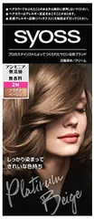
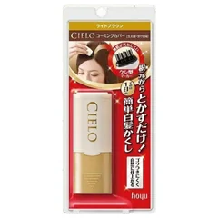
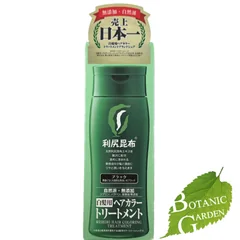
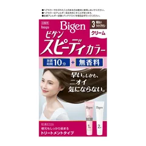
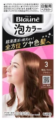
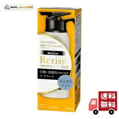
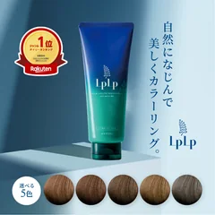

1位

サイオス
ヘアカラー クリーム
2N プラチナベージュ・1個
¥512税込・出典掲載価格
書き込みの声
- 自分で染める人がいちばん多く名前を挙げていたのがこれ。美容院みたいにきれいに入るという声
- クリームタイプは根元だけに塗り分けやすいのが強み。刷毛を別で買うともっと塗りやすい
気になる声3週間に1回、自分で染めているという人も。染める間隔は人それぞれなので無理をしないで
販売価格・容量・送料はリンク先でご確認ください
THE COSME EDIT / 2026.09.18
ガルちゃんの白髪・白髪染め・カラートリートメント・グレイヘアのトピ28個（書き込み9,508件）で名前が多く挙がったものを7つ、挙がった回数の順に。動画では、買う前にできる「全部染めるのをやめて根元だけにする」「分け目をずらす」「乾かすときに根元を立てる」から先に話しています。使った人の声のまとめで、結果を保証するものではありません。かゆみや湿疹、ヒリヒリが出たら皮膚科へ。
07 ITEMS 動画で紹介した商品
動画でいちばん時間を割いているのは商品ではなく、染める回数を減らすやり方です（全部染めるのをやめて根元だけにする／分け目を1センチずらすかジグザグにする／乾かすときに根元を前に倒す／美容院には自分でリタッチしていると先に伝える）。買う前にそちらを試してみてください。
価格は出典掲載時のものです。楽天の現在価格とは異なる場合があります。

サイオス
2N プラチナベージュ・1個
¥512税込・出典掲載価格
書き込みの声
気になる声3週間に1回、自分で染めているという人も。染める間隔は人それぞれなので無理をしないで
販売価格・容量・送料はリンク先でご確認ください

シエロ
ライトブラウン・9mL
¥1,280税込・出典掲載価格
書き込みの声
気になる声根元だけに使う道具。全体を染めるものと分けて2本持つのが、いちばん回数を減らせるやり方
販売価格・容量・送料はリンク先でご確認ください

ピュール
ブラック・200g
¥2,198税込・出典掲載価格
書き込みの声
気になる声つや感は物足りないという声も。また、こういうタイプを使ったあとは美容院での色の入り方が変わることがあるので、次に行くときは先に伝えて
販売価格・容量・送料はリンク先でご確認ください

ビゲン
3 明るいライトブラウン・40g＋40g
¥473税込・出典掲載価格
書き込みの声
気になる声早く終わるぶん、塗り残しには注意。分け目から先に塗って、こめかみ、生え際、最後に後ろの順で
販売価格・容量・送料はリンク先でご確認ください

ブローネ
3 明るいライトブラウン
¥1,064税込・出典掲載価格
書き込みの声
気になる声泡は全体に回りやすいぶん毛先まで染料がのる。毎回これだと毛先が重なるので、根元のリタッチと使い分けて
販売価格・容量・送料はリンク先でご確認ください

リライズ
まとまり仕上げ・本体155g
¥4,550税込・出典掲載価格
書き込みの声
気になる声缶がどんどんたまるのが困る、という声も。つけかえ用もあります
販売価格・容量・送料はリンク先でご確認ください

ルプルプ
200g・ノンジアミン
¥3,300税込・出典掲載価格
書き込みの声
気になる声手袋をして、洗面台にはタオルを敷いて。洗い流したあとのお湯にも色が出るので、湯船に入る前に済ませて
販売価格・容量・送料はリンク先でご確認ください
SOURCE & NOTES
集計期間：2026年9月17日に確認（書き込みは2016年〜2026年）
価格は2026年9月17日に楽天の商品ページで確認した税込価格です。順位は書き込みで名前が挙がった回数の順で、良し悪しの順位ではありません。色や容量によって価格が変わります。